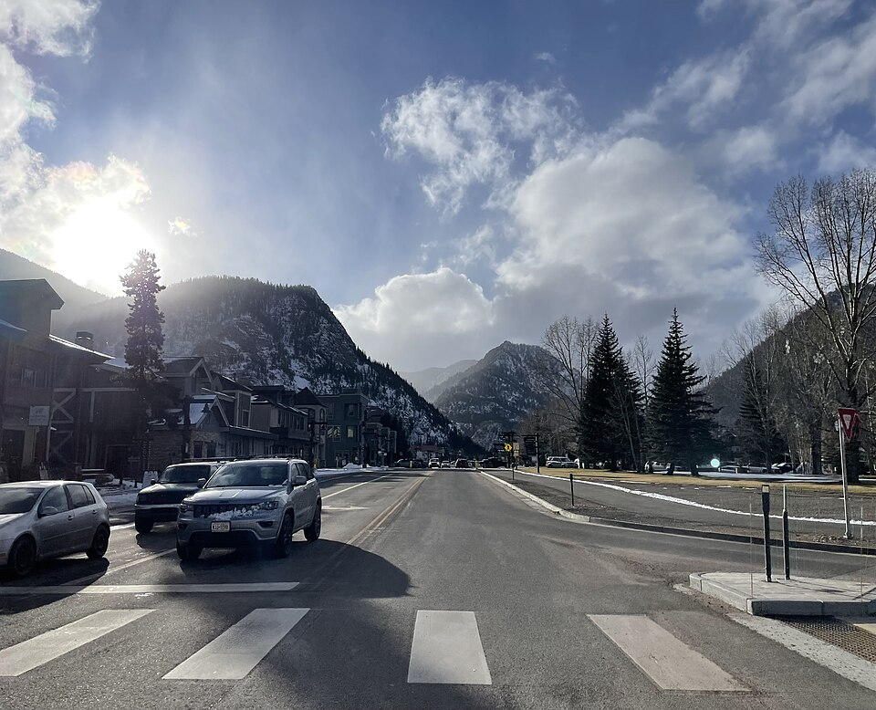
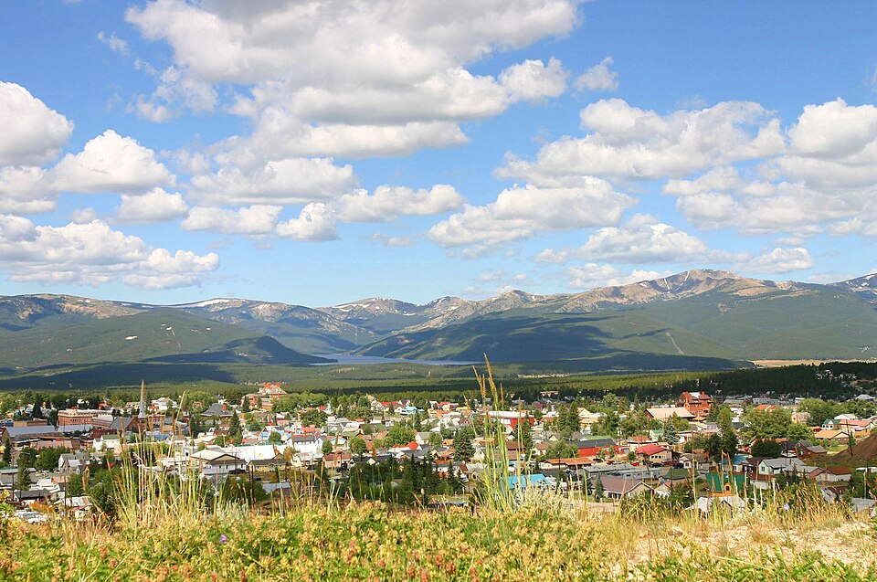
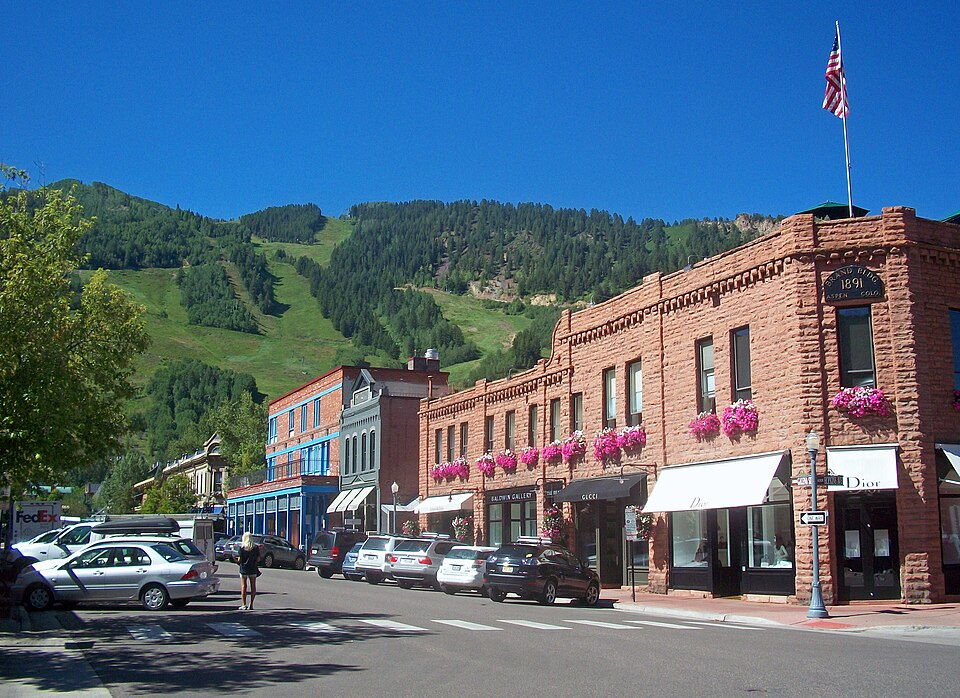
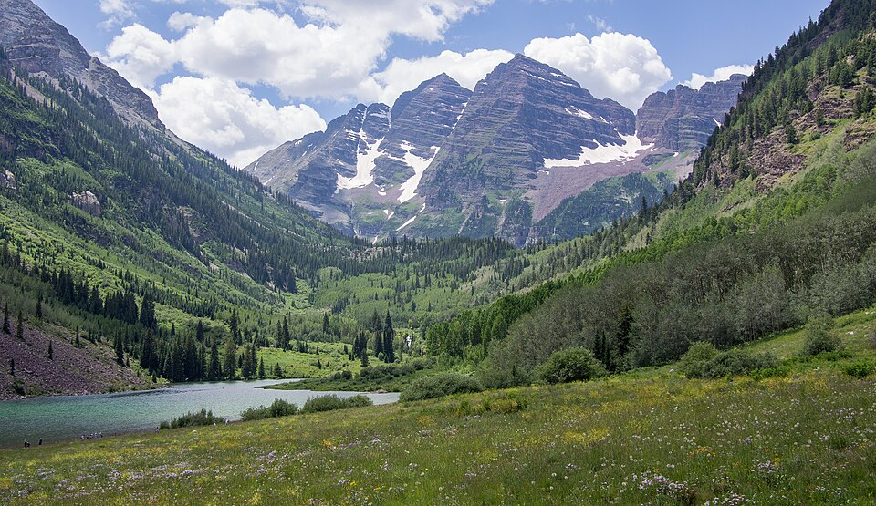
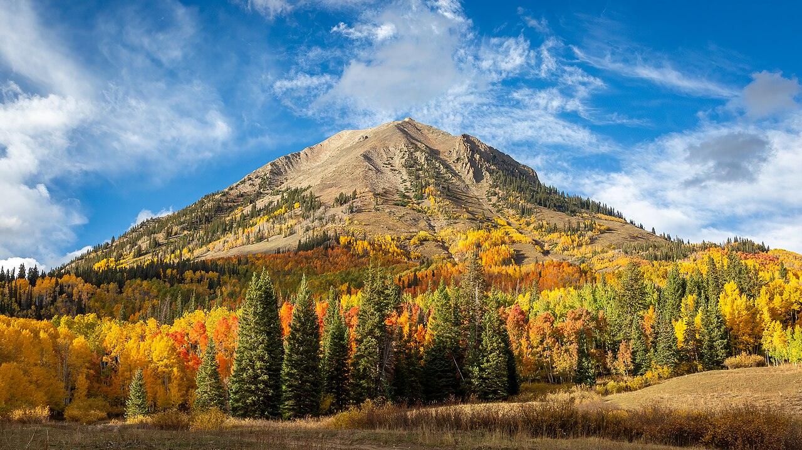
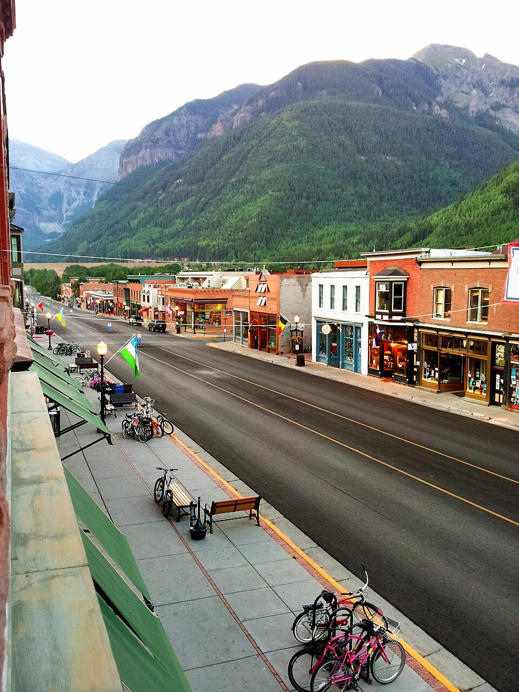
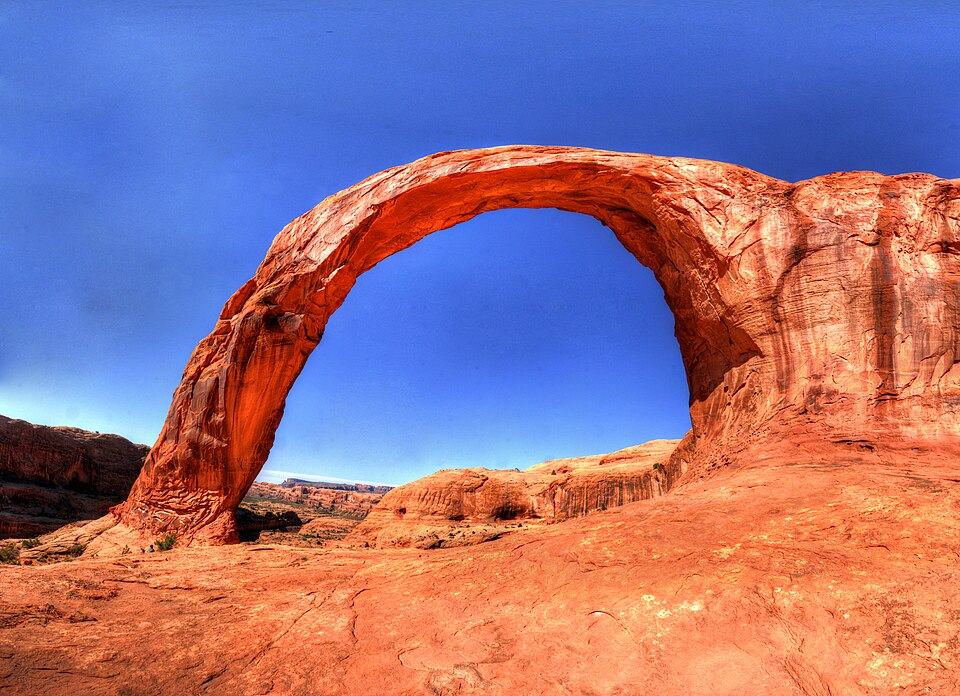
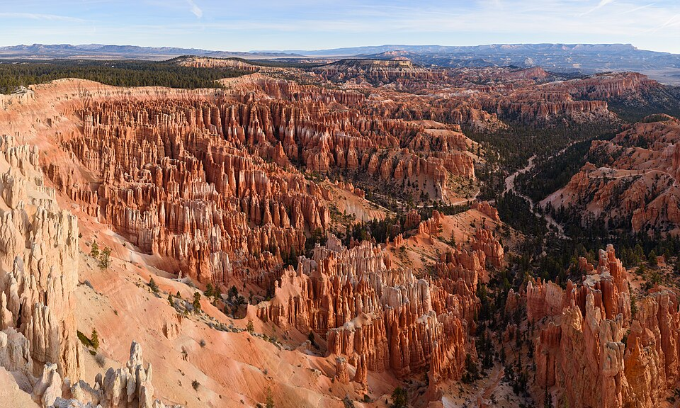
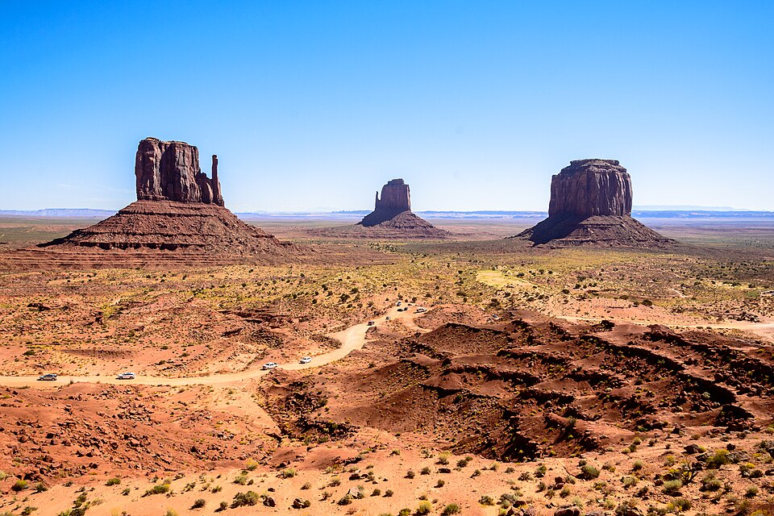
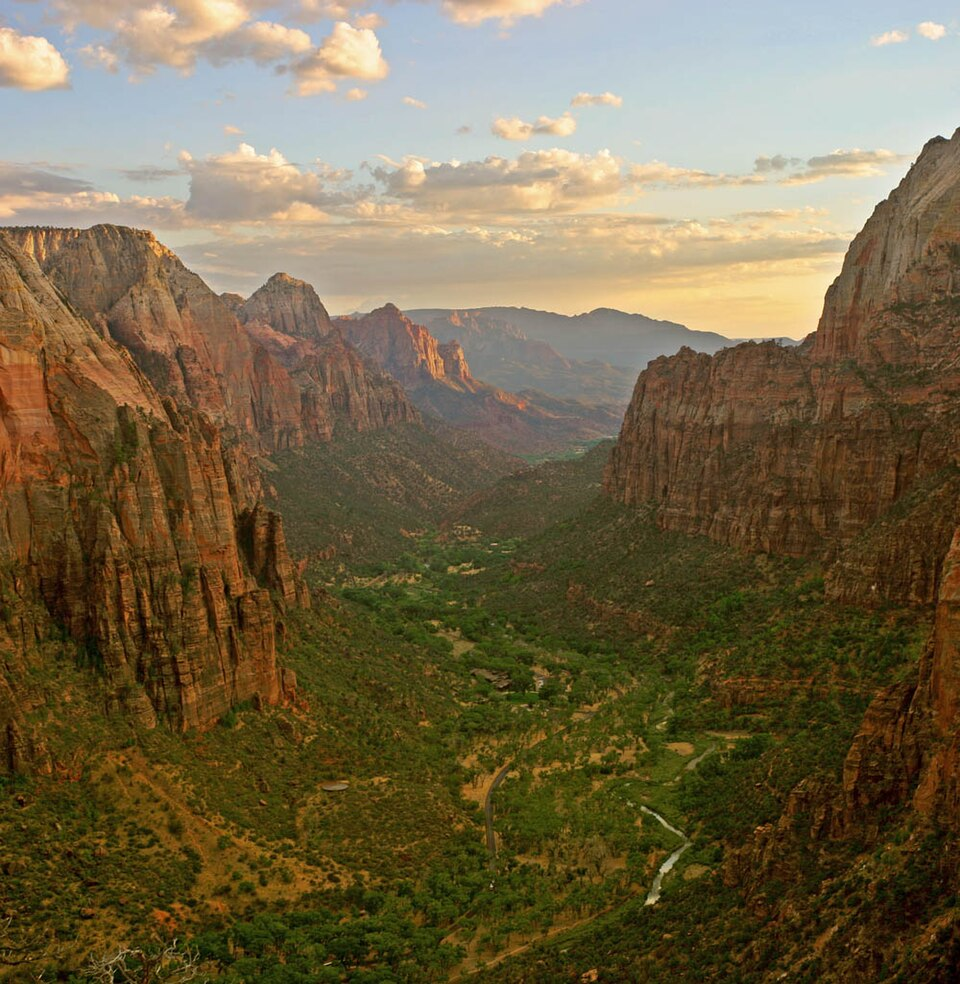

Friday October 2 · 7 p.m. Pacific
Golden Knights vs Anaheim Ducks
NHL preseason at T-Mobile Arena. Aim to arrive in Las Vegas by mid-afternoon, check in and leave time to reach the arena. Tickets are not booked.
Mountain towns, short hikes, big views, good food and beer. Two weeks from Colorado to the desert, with room to change plans.
Denver airport → Breckenridge/Frisco area → Colorado options → Moab → two desert routes → Zion → Las Vegas.
NHL preseason at T-Mobile Arena. Aim to arrive in Las Vegas by mid-afternoon, check in and leave time to reach the arena. Tickets are not booked.
If a show appeals, use the flexible October 1 night for an earlier Vegas arrival. Check a specific performance before changing lodging. Do not squeeze a show around the hockey game.
Game date and time checked against the arena schedule September 15, 2026. October 3 is the departure day, not another Vegas night.
A working schedule for checking reservations, not a locked itinerary. Nights below mean the dates spent sleeping at each stop; checkout is the next morning.
If Aspen is selected and a campsite matters, check now. Live availability and the operating calendar have not been checked. Check campground ↗
Maroon Bells parking or shuttle access is a separate reservation; aim for September 21, or September 20 afternoon if continuing to Crested Butte the next day.
Check in September 22; check out September 24. Two nights: September 22 and 23.
Worth checking now if staying in town is a priority. The 2026 season runs through October 4 and this booking window is already open. Availability has not been checked. Official booking details ↗
Matterhorn Campground is the alternative for the same dates; check its seasonal calendar and available sites.
Reserve a specific guided-tour slot after choosing the southern route. Follow the operator’s stated local time and check-in instructions. Authorized tour operators ↗
Peak One Campground stays an arrival decision. No need to investigate availability for this plan.
Event tradeoff: this schedule leaves Colorado before the September 25 Gunnison Hoedown and September 26 Delta derby. Choosing either as an anchor means revising these dates before booking. Weather and longer stops can also move the middle of the trip.
Reservation policies checked September 15, 2026. No availability or booking is confirmed.
Head straight here from the airport. Choose a town walk and dinner in Breckenridge or Frisco, or a lakeside camp at Dillon Reservoir. The first night can move farther west if arrival, weather and energy line up.

A practical tent stop on the Frisco Peninsula, with recreation paths toward town and around the reservoir.
A hostel base for Breckenridge, with shared and private room options. Check the price for two before choosing.
A good deal at Copper Mountain could work. If it is still early and everyone feels good, continue toward Leadville or Twin Lakes instead of making Summit County mandatory.
A short strip of pubs, pizza, and breakfast spots; walk it and choose by the crowd on the patio.
Flat lakeside miles with Tenmile Range backdrops · a gentle first day at altitude.
Steep but short, straight from Main Street to a view over the whole valley.
Fall weekends often bring small markets on Main Street; nothing confirmed for these dates yet.

Leadville adds old mining-town streets and a saloon stop: a useful contrast to the resort side of Aspen and Telluride. Stop for a look and a beer, then keep moving. Twin Lakes camping makes sense if it is getting late, not as a compulsory overnight.
A short look around the historic center before continuing toward Aspen or the Gunnison Valley.
Leadville lodging or Twin Lakes camping can be a first-night extension or a later stop. Otherwise continue to the selected Colorado destination.
These are alternatives, not two compulsory stops. Leadville and Crested Butte offer a useful contrast to Aspen and Telluride: more time for a town wander, a casual meal and a beer, alongside the mountain scenery.
The Bells, a downtown walk and perhaps Aspen Mountain. Short hikes and town walks fit without an expensive stay.
Tradeoff: access planning for the Bells and more expensive lodging.
Elk Avenue, fall scenery, short walks and casual food. Add a ride if it appeals to both.
Tradeoff: replaces the Bells unless there is time for both.
Compare the two towns and connect via Carbondale, CO-133 and seasonal Kebler Pass.
Tradeoff: more Colorado driving and less time in Utah. No direct ordinary road across the mountains.
All options shown. Nothing chosen yet.
Late September can bring golden leaves beneath the two maroon peaks. Check the current shuttle and parking reservation options.


Aspen dining runs expensive; Basalt offers casual alternatives down-valley.
The postcard view with almost no effort.
Up into the basin between the Bells, golden aspen groves most of the way.
A good pick for ski-town character: Elk Avenue, bikes outside cafes, casual food and mountain views. Explore on foot, take a short hike, or ride if the mood is right. Kebler Pass adds autumn scenery when the seasonal road is open.

Green chile, pizza, and old bar rooms in original 1880s buildings.
Stop often; the groves are the event.
If the route passes near Paonia, stop for lunch, cider and a siesta in the garden. Camping is an option if it gets late or a longer break sounds good. No need to route the trip around it.

Farm plates and fresh-pressed juice; the cider flight is the point.
Town walks and canyon views first, with a hike or via ferrata if both want a bigger day. Staying in Town Park would make the town easy to explore; Matterhorn Campground is the alternative outside town.

Target nights September 22–23; checkout September 24. Check reservations ↗
Alternative for September 22–23. Confirm seasonal operation and availability.
Choose a short outing or a longer hike. Via ferrata is an optional separate activity, not the default day.
Full researched food picks are still being moved into this layout.
Arches for the scenic drive, Corona Arch for a walk, and the river corridor for camping. Add mountain biking if both feel like riding; leave time for food, beer and a slower afternoon.

Diners, taco counters, and brewery food built for post-hike appetites.
Choose one main route between Moab and Zion. The northern route follows Capitol Reef, Escalante and Bryce; the southern route visits Monument Valley and Page. Combining both complete routes adds substantial driving and needs more days. Bryce alone can still be added to the southern route, as shown below.

Bryce Canyon

Both arrive at Zion Canyon · riverside walks and shuttle-served big-wall trails · then ~2.5 h to Las Vegas.

Editorial field guide: locations are the spine, each a self-contained leaflet chapter with a strict Stay/Eat/Do/Events tab structure so the two travelers can compare places on equal terms. Photos appear only where verified for that exact place and season; everything else gets an honest placeholder rather than a borrowed image. Ratings and attendance are never invented · links go to live Google Maps searches with "Rating not checked" labels. The route fork is presented as a deliberate side-by-side decision, not a fixed itinerary. Picks accumulate in an in-memory shelf (sticky footer) as a lightweight shared shortlist. Single column, generous whitespace, serif leaflet voice, fully readable at 375px where photo rows stack vertically.
Aspen downtown, Daniel Case, August 2010. Source · CC BY-SA 3.0.
Crested Butte area autumn landscape, Ron Raffety, September 30, 2025. This is the surrounding landscape, not downtown. Source · CC BY-SA 4.0. Photos displayed with responsive cropping.
Big B’s picnic and swings garden: image embedded from Big B’s official website, © Big B’s Fruit Co. Public reuse rights not confirmed.
Downtown Leadville.JPG · MarjiRanes · CC BY-SA 4.0. Display crop.
Breckenridge Main Street.jpg · Av9 · CC BY-SA 3.0. Display crop.
Moab, Utah downtown.jpg · Quintin Soloviev · CC BY 4.0. Display crop.
Elk Avenue in Crested Butte · Carol M. Highsmith · Public domain. Display crop.
Gothic Mountain · Steven Damron from San Francisco · CC BY 2.0. Display crop.
Silver Dollar Saloon, Leadville · Laurenschneider210 · CC BY-SA 4.0. Display crop.
Telluride from the gondola · NatalieZavaleta · CC BY-SA 4.0. Display crop.
Bridal Veil Falls and powerhouse · Terry Foote (talk) · CC BY-SA 3.0. Display crop.
Slickrock Bike Trail, Moab · Brian W. Schaller · FAL. Display crop.
Dead Horse Point · Clément Bardot · CC BY-SA 3.0. Display crop.
Lower Antelope Canyon · King of Hearts · CC BY-SA 4.0. Display crop.
Valley of Fire · Gzzz · CC BY 4.0. Display crop.
Autumn colors near Crested Butte · RON RAFFETY · CC BY-SA 4.0. Display crop.
Hoover Dam · Christian David · CC BY-SA 4.0. Display crop.
Venue and activity photos are embedded from their linked official websites. Source details checked September 15, 2026; hours and offers may change.
Pin the guide link in WhatsApp. Try @Meta AI with a question; if it cannot read the page, paste the trip brief below. A ChatGPT group chat can also use the text or uploaded file.
· Open trip brief · Full guide as text
Chat answers do not edit this website. Keep a short “decisions so far” message in the group and refresh the brief after major changes.
{kind=link}
{kind=link}
{kind=link}
{kind=link}
{kind=link}
{kind=link}
{kind=link}
{kind=link}
{kind=link}
{kind=link}
{kind=link}
{kind=link}
{kind=link}
{kind=link}